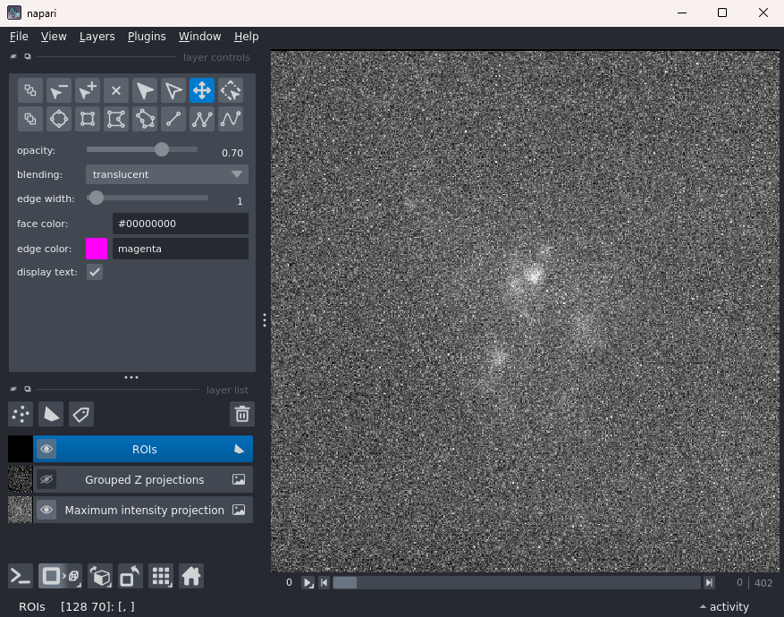
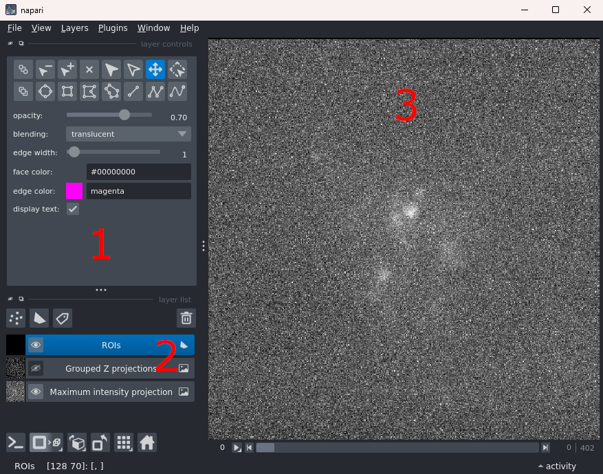
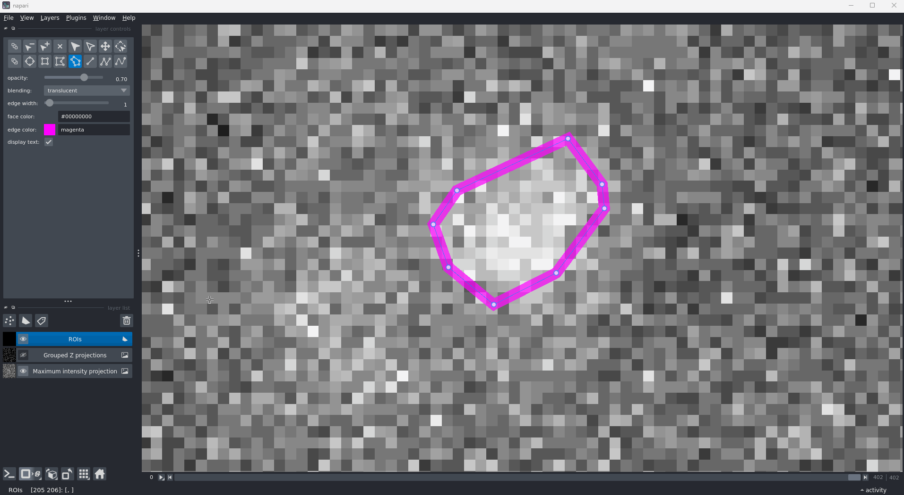
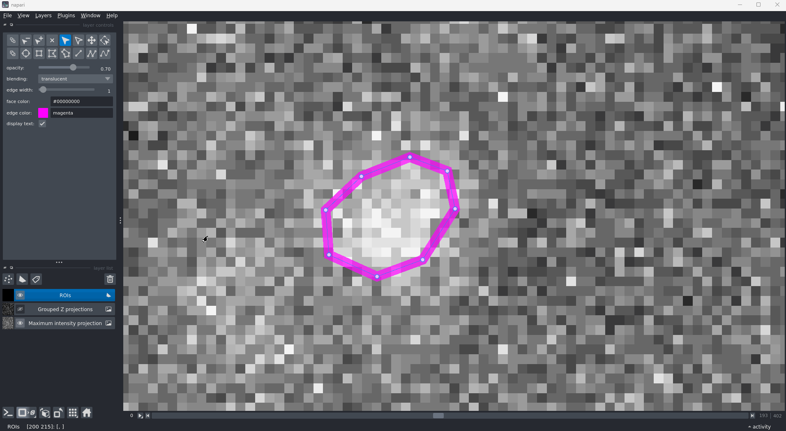
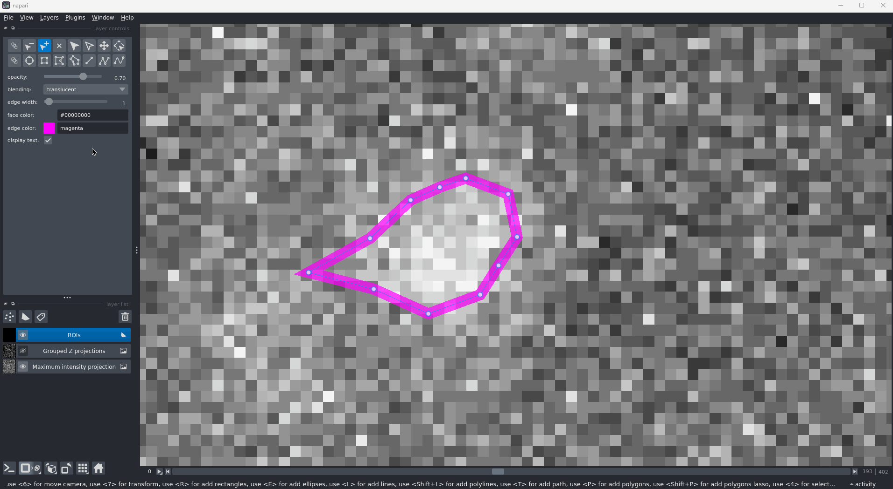
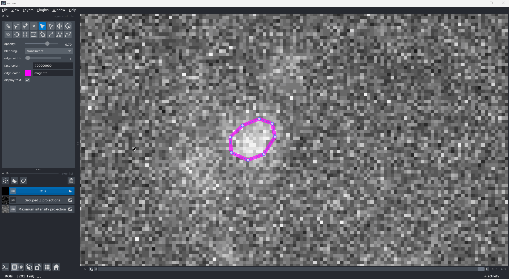

ROI drawing
ROI drawing is the only step for which your manual input is required. Once your data has been motion corrected, you need to start the ROI drawing interface and manually draw around the cells present in your recording. Using these ROIs, the rest of the workflow will then be able to extract, decontaminate, and analyse the cell signals present.
Starting the GUI
The command to use to start the GUI is:
drim2p draw roi .
This step can take a very different amount of time depending on the size, and storage modality, of your recording. If you only used a small recording as recommended, this should open the GUI in less than 30 seconds. However, for larger files (and for files on remote filesystems), this can start to take a minute or two (longer on network drives).
What is happening under the hood when you run the command is that drim2p is loading the file and making both a mean intensity projection of the whole recording as well as grouped mean intensity projections every 10 frames.
If all goes well, you will see this log message:
Opening 'imaging_file.h5'.
Followed by the GUI opening up. It will look like this with your own data opened on the right:

Note
For larger and remote files, you might want to use the --lazy option (i.e., drim2p draw roi . --lazy) to avoid computing the mean intensity projection over the whole file. This will considerably speed up the GUI startup time, but will result in no mean intensity projection being shown and scrolling through grouped Z projections feeling more sluggish.
Understanding the GUI

For a complete tutorial of the napari viewer (the GUI), you can follow this official tutorial. The tutorial provided here will only touch on the relevant parts for ROI drawing.
1. Controls
The section labelled 1 is where you can pick the different interactions your mouse can do. By default, you will have the pan tool selected. This means you can drag the view (labelled 3) while the left mouse button is pressed down.
For ROI drawing, you will be using the button on the second row, fifth column (the irregular hexagon). Using this, you can draw ROIs by dragging your mouse around the region you want to mark.
2. Layer list
napari works using layers. The layer list contains three layers: 'ROIs', 'Grouped Z projections', and 'Mean intensity projection' (missing if using --lazy).
By default, you will see that only the 'ROIs' and 'Mean intensity projection' are visible (the eye icon to the left of their name is toggled on) while the 'Grouped Z projections' is not. This allows you to use the overall projection to draw your ROIs before showing the 'Grouped Z projections' and verifying that motion correction was done properly. You can toggle the visibility of each layer by clicking the eye icon.
When playing around with layers, it is possible that you will select a layer other than 'ROIs' (e.g., by left clicking on the name of another layer). Doing so will change what is available from the controls and will prevent you from drawing ROIs. To go back to ROI drawing, simply click on the 'ROIs' layer by left clicking on its name.
3. View
The view is where all the layers are displayed, stacked on top of each other. Using the default pan tool, you can drag it around and, using the mouse wheel, you can zoom in and out.
Drawing ROIs
To draw ROIs, select the tool shown in the GIF below. You can then press and hold left click to draw around the region of interest.

Adjusting ROIs
Moving vertices
Once you have drawn an ROI, you can adjust the vertices it is made of by moving them around until you are happy with it.

Adding vertices
If the vertices generated for your ROI do not fit the shape you want, you can add vertices to it.

Deleting vertices
If there are vertices that aren't necessary to capture the ROI, you can remove vertices from it.

Deleting ROIs
If you have added an ROI somewhere you didn't mean to or don't want to consider a certain cell after more thought, you can remove ROIs.

Scrolling grouped projections
Once you have drawn the ROIs and you are satisfied with them, you can toggle the visibility of the 'Grouped Z projections' and play around with the slider and arrows at the bottom to navigate through the projections (by default every 10 frames). This allows you to confirm your ROIs capture the activity of the cells in the recording and allows validating the motion correction worked properly.

Finalising the ROIs
When you are happy with your ROIs and you are ready to move to the next step, simply close the GUI window and the ROIs will be saved.
If, for one reason or another, you have drawn a bunch of ROIs but do not want them to be saved, you should delete the 'ROIs' layer by selecting it (left click on its name) and clicking the bin icon above it and to the right. This will delete all the ROIs drawn during the current session since starting the GUI. Upon closing the GUI, any modification to the ROIs will be reverted.
Editing existing ROIs
Once ROIs have been saved to the HDF5 file, you can come back to it later on, run drim2p draw roi . and the GUI will reopen the file, with all its ROIs already drawn. Note that at this point, deleting the ROIs layer will not result in those pre-existing ROIs being deleted. If you wish to delete those, you will need to delete the ROIs without deleting the layer (this can be done by selecting all the ROIs with the select tool and pressing delete or backspace on your keyboard).
What's next?
Now that you have ROIs that should have their signals preprocessed, you should move on to signal extraction and decontamination.